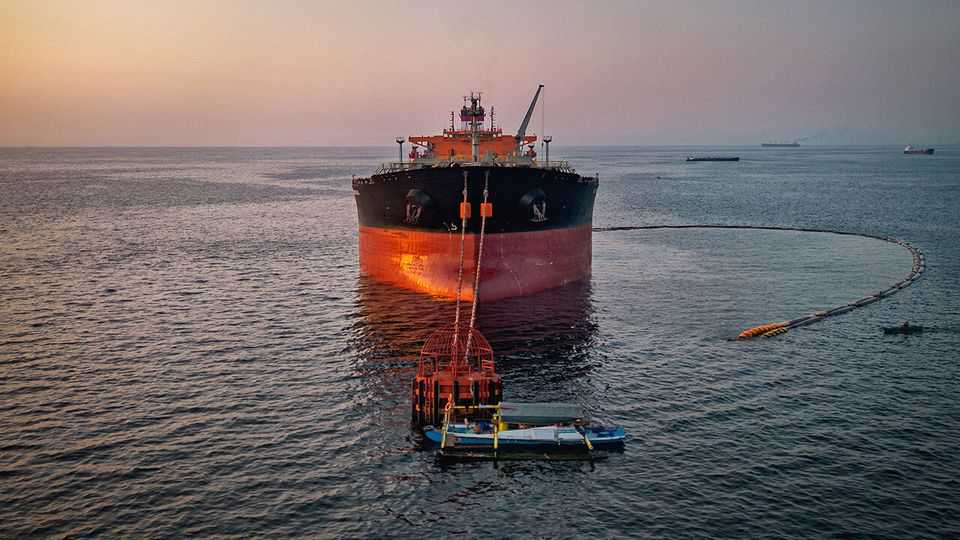

Donald Trump is getting a new tariff weapon against Russia
But the president will have plenty of discretion over who gets hit

Aug 13th 2026
“LOOK WHAT we’ve done here,” remarked Lindsey Graham on learning in February that Donald Trump had launched America’s war against Iran. “I almost cried.” The Republican senator, who died last month, might have teared up again at the latest display of American muscle. On August 7th the Senate passed the Lindsey O. Graham Sanctioning Russia and Iran Act by 86 votes to 11. The bill is yet to clear the House, but has the backing of Mr Trump.
Focusing on Russia, the legislation involves both a sanctions scalpel and a tariff sledgehammer. It imposes sanctions on Russian officials, oligarchs, banks, the defence industry and energy projects—even in areas, such as Arctic energy development, that had been floated as candidates for co-operation between America and Russia in talks last year. These penalties cannot be lifted until Russia signs a peace deal accepted by Ukraine.
More unusually, the bill imposes tariffs of up to 100% on all goods from the top five importers of Russian oil and the top five importers of Russian gas, as well as those helping Russia to evade sanctions. That would ensnare more than a dozen countries, including many of America’s friends. But there are two big caveats. Countries whose purchases represent less than 15% of Russia’s gas exports—and who are taking steps to reduce those purchases—are exempt. That should spare allies such as France and Belgium. The bill also includes a “national-interest” waiver that gives the president plenty of latitude.
Depending on how they are implemented, the measures could have a significant impact on Russia. Oil and gas provide 20-25% of the government’s revenues. “Taken at face value, this would have a devastating effect on Russian oil exports,” says Elina Ribakova of the Peterson Institute for International Economics in Washington. “You have an economy in stagflation with zero growth this year, probably.”
But it is not clear how tightly the Trump administration wants to squeeze Russia’s oil sector. America has already provided intelligence to Ukraine, helping it attack Russian energy infrastructure. The strikes have triggered a domestic fuel crisis. In July Russia’s fossil-fuel export revenues fell by 12% month on month. Earnings from crude-oil exports by pipeline fell by 21%, while oil-product export loadings dropped by 23%, to their lowest level on record.
On August 12th Ukraine said it had attacked an oil refinery in Orsk, almost 1,000 miles behind the front line. Yet on the same day the Financial Times reported that J.D. Vance, America’s vice-president, had asked Volodymyr Zelensky, Ukraine’s president, to halt attacks on a pipeline terminal in the Black Sea, for fear of harming American firms and driving up oil prices.
Mr Trump may also be wary of upsetting other foreign-policy priorities by implementing the tariffs to their fullest extent. China, India and Turkey are the largest importers of Russian crude. Slovakia, a NATO ally, could hit the oil threshold and has few plans to change that. Japan depends on Russian gas. In practice, the bill gives Mr Trump a sliding scale of enforcement: tariffs can be set anywhere from just above zero to 100%, and adjusted as countries buy more or less Russian energy.
Ten Democratic senators voted against the bill, fearing that it would hand Mr Trump a fresh weapon in his trade wars. One risk is that the Russia-related tariffs become bargaining chips in unrelated trade talks. Another is that punishment is meted out selectively—to friends, but not adversaries, as so often under Mr Trump.
The legislation is yet another sign of the ballooning role of tariffs in American statecraft. Mr Trump had already imposed unprecedented “secondary” tariffs on countries aiding Iran. The new bill applies the same idea to Russia. The paradox, note Julian Arato, Kathleen Claussen and Timothy Meyer in a new paper, is that this expansion of tariff power reflects “a more constitutionally sound approach” than Mr Trump’s earlier levies. ■
Stay on top of American politics with The US in brief, our daily newsletter with fast analysis of the most important political news, and Checks and Balance, a weekly note that examines the state of American democracy and the issues that matter to voters.